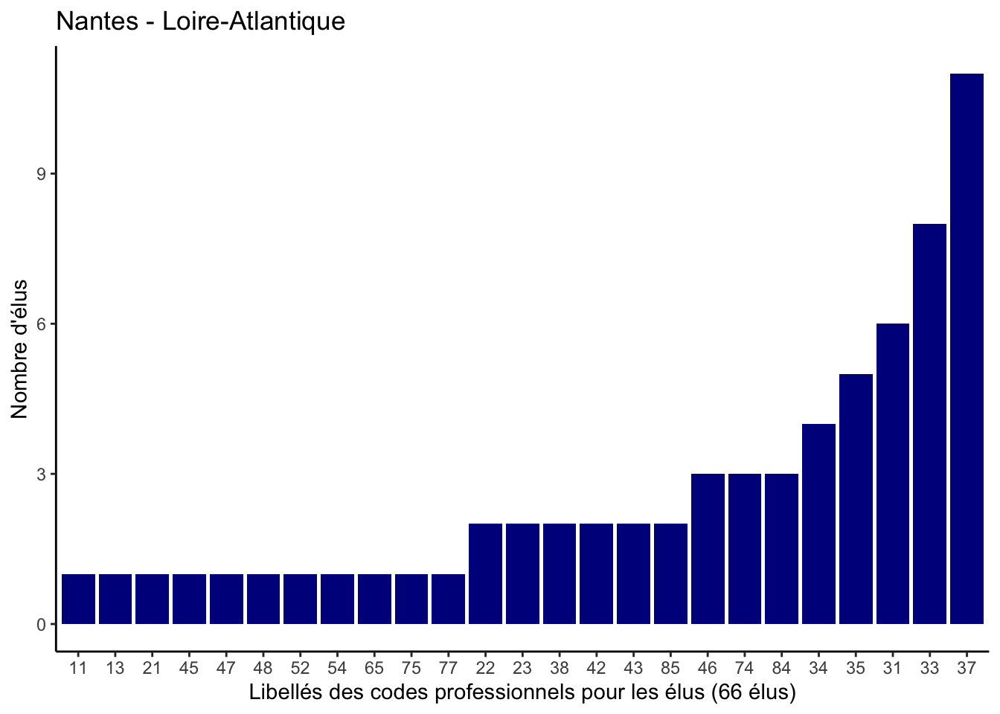
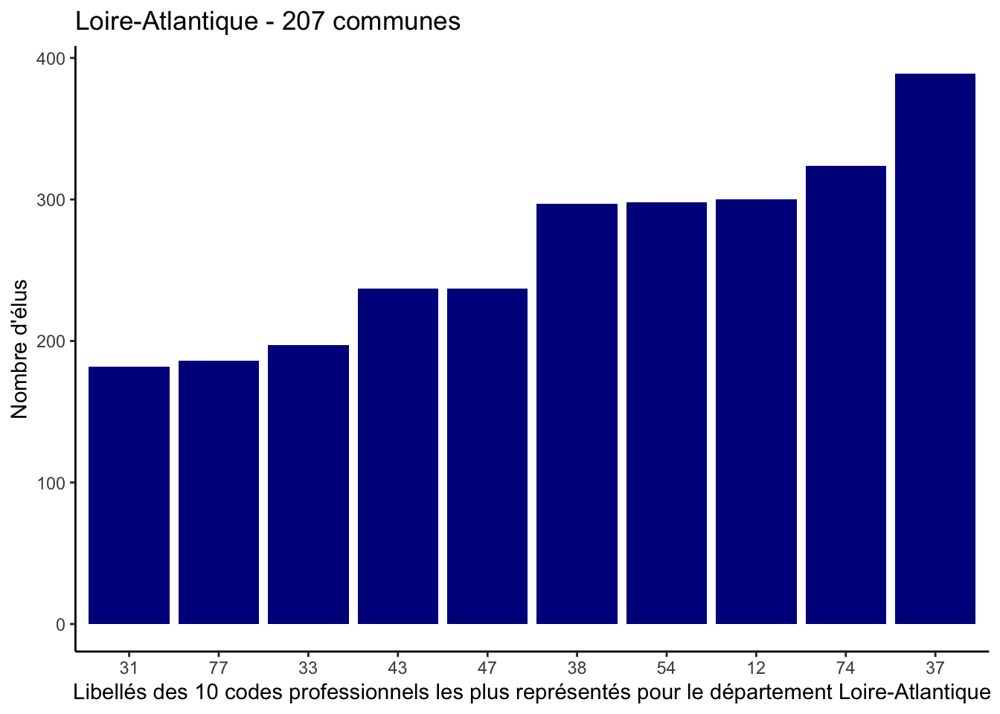

summary_commune <- function(x, code_commune) {
# Filtrer les données pour la commune spécifique
commune_data <- x[x$Code.de.la.commune == code_commune, ]
# Assignation de la classe 'commune' au dataframe si nécessaire
if (!"commune" %in% class(commune_data)) {
class(commune_data) <- c("commune", class(commune_data))
# cat("La classe de l'objet a été modifiée en 'commune'.\n")
}
nom_commune <- unique(commune_data$Libellé.de.la.commune)
nombre_elus <- compter_nombre_d_elus(commune_data)
distribution_age <- calcul_distribution_age(commune_data)
elu_plus_age <- trouver_l_elu_le_plus_age(commune_data)
# Affichage des informations
cat("Nom de la commune", nom_commune, "\n")
cat("Nombre d'élu.e.s de la commune", nombre_elus, "\n")
cat("Distribution des âges des élu.e.s", distribution_age, "\n")
cat("L'élu.e le/la plus agé.e :\n")
cat("Nom :", elu_plus_age$Nom.de.l.élu, "\n")
cat("Prénom :", elu_plus_age$Prénom.de.l.élu, "\n")
cat("Âge :", elu_plus_age$Âge, "\n")
}Rapport de la ville de Nantes
Ce rapport permet de visualiser les statistiques descriptives concernant les élus municipaux de la ville de Nantes et du département de la Loire Atlantique.
Fonction summary_commune()
Résultats
summary_commune(data, params$code_commune)Nom de la commune Nantes
Nombre d'élu.e.s de la commune 66
Distribution des âges des élu.e.s 28 42.25 50.5 58.25 73
L'élu.e le/la plus agé.e :
Nom : PROCHASSON
Prénom : François
Âge : 73 Fonction plot_commune()
plot_commune <- function(df, code_commune) {
# Filtrer les données pour la commune spécifique
commune_data <- df[df$Code.de.la.commune == code_commune, ]
# Validation du schéma des données
# validate_schema(commune_data)
# Extraire les informations de la commune et du département
nom_commune <- unique(commune_data$Libellé.de.la.commune)
nom_departement <- unique(commune_data$Libellé.du.département)
# Vérification qu'il y a une seule commune dans les données
if(length(nom_commune) > 1) {
stop("Le df contient plusieurs communes")
}
# Calcul du nombre d'élus par CSP
code_csp <- commune_data |>
group_by(Code.de.la.catégorie.socio.professionnelle) |>
summarise(n = n()) |>
arrange(desc(n))
# Création du graphique
ggplot(code_csp) +
aes(x = reorder(Code.de.la.catégorie.socio.professionnelle, n), y = n) +
geom_bar(stat = "identity", fill = "darkblue") +
labs(
title = paste(nom_commune, "-", nom_departement),
x = paste("Libellés des codes professionnels pour les élus (", compter_nombre_d_elus(commune_data), " élus)", sep = ""),
y = "Nombre d'élus"
) +
theme_classic()
}Graphique :
plot_commune(data, params$code_commune)
Fonction summary_departement()
summary_departement <- function(x, code_departement) {
# Filtrer les données pour le département spécifique
departement_data <- x[x$Code.du.département == code_departement, ]
# Vérification que l'objet a bien la classe 'departement'
if (!"departement" %in% class(departement_data)) {
class(departement_data) <- c("departement", class(departement_data))
# cat("La classe de l'objet a été modifiée en 'departement'.\n")
}
# Récupération des informations de base pour le département
nom_departement <- unique(departement_data$Libellé.du.département)
nombre_commune <- length(unique(departement_data$Libellé.de.la.commune))
nombre_elu <- compter_nombre_d_elus(departement_data)
distribution_age <- calcul_distribution_age(departement_data)
# Informations sur l'élu le plus âgé dans le département
elu_plus_age <- trouver_l_elu_le_plus_age(departement_data)
# Fonction pour trouver l'élu le plus jeune
trouver_l_elu_le_plus_jeune <- function(df) {
validate_schema(df)
resultats <- df |>
mutate(Date.de.naissance = dmy(Date.de.naissance)) |>
slice(which.max(Date.de.naissance)) |>
mutate(Âge = as.integer(interval(Date.de.naissance, Sys.Date()) / years(1)))
return(resultats)
}
# Informations sur l'élu le plus jeune
elu_le_plus_jeune <- trouver_l_elu_le_plus_jeune(departement_data)
# Analyse des communes par moyenne d'âge
communes_stats <- departement_data |>
mutate(
Date.de.naissance = dmy(Date.de.naissance),
Age = as.integer(interval(start = Date.de.naissance, end = today()) / years(1))
) |>
group_by(Libellé.de.la.commune) |>
summarise(
age_moyen = mean(Age, na.rm = TRUE),
min_age = min(Age, na.rm = TRUE),
q1_age = quantile(Age, 0.25, na.rm = TRUE),
mediane_age = median(Age, na.rm = TRUE),
q3_age = quantile(Age, 0.75, na.rm = TRUE),
max_age = max(Age, na.rm = TRUE)
)
# Commune avec les moyennes d'âge les plus faibles et les plus élevées
commune_plus_jeune <- communes_stats |>
filter(age_moyen == min(age_moyen, na.rm = TRUE))
commune_plus_agee <- communes_stats |>
filter(age_moyen == max(age_moyen, na.rm = TRUE))
# Affichage des résultats
cat("Nom du département: ", nom_departement, "\n")
cat("Nombre de communes: ", nombre_commune, "\n")
cat("Nombre d'élus dans le département: ", nombre_elu, "\n")
cat("\nDistribution des âges des élu.e.s :\n")
print(distribution_age)
# Infos élu le plus âgé
cat("\nL'élu.e le/la plus agé.e du département:\n")
cat("- Nom :", elu_plus_age$Nom.de.l.élu, "\n")
cat("- Prénom :", elu_plus_age$Prénom.de.l.élu, "\n")
cat("- Âge :", elu_plus_age$Âge, "ans\n")
# Infos élu le plus jeune
cat("\nL'élu.e le/la plus jeune du département:\n")
cat("- Nom :", elu_le_plus_jeune$Nom.de.l.élu, "\n")
cat("- Prénom :", elu_le_plus_jeune$Prénom.de.l.élu, "\n")
cat("- Âge :", elu_le_plus_jeune$Âge, "ans\n")
# Affichage des statistiques par commune
cat("\nCommune avec la moyenne d'âge la plus faible:", commune_plus_jeune$Libellé.de.la.commune, "\n")
cat("Distribution des âges dans la commune:\n")
cat("- Moyenne:", round(commune_plus_jeune$age_moyen, 1), "ans\n")
cat("- Minimum:", commune_plus_jeune$min_age, "ans\n")
cat("- 1er quartile:", commune_plus_jeune$q1_age, "ans\n")
cat("- Médiane:", commune_plus_jeune$mediane_age, "ans\n")
cat("- 3ème quartile:", commune_plus_jeune$q3_age, "ans\n")
cat("- Maximum:", commune_plus_jeune$max_age, "ans\n")
cat("\nCommune avec la moyenne d'âge la plus élevée:", commune_plus_agee$Libellé.de.la.commune, "\n")
cat("Distribution des âges dans la commune:\n")
cat("- Moyenne:", round(commune_plus_agee$age_moyen, 1), "ans\n")
cat("- Minimum:", commune_plus_agee$min_age, "ans\n")
cat("- 1er quartile:", commune_plus_agee$q1_age, "ans\n")
cat("- Médiane:", commune_plus_agee$mediane_age, "ans\n")
cat("- 3ème quartile:", commune_plus_agee$q3_age, "ans\n")
cat("- Maximum:", commune_plus_agee$max_age, "ans\n")
}Résultats :
summary_departement(data, params$code_departement)Nom du département: Loire-Atlantique
Nombre de communes: 207
Nombre d'élus dans le département: 4781
Distribution des âges des élu.e.s :
0% 25% 50% 75% 100%
22 46 54 63 84
L'élu.e le/la plus agé.e du département:
- Nom : GERARD
- Prénom : Jean
- Âge : 84 ans
L'élu.e le/la plus jeune du département:
- Nom : MERCERON
- Prénom : Leslie
- Âge : 22 ans
Commune avec la moyenne d'âge la plus faible: Ruffigné
Distribution des âges dans la commune:
- Moyenne: 44.4 ans
- Minimum: 28 ans
- 1er quartile: 37.5 ans
- Médiane: 44 ans
- 3ème quartile: 49 ans
- Maximum: 70 ans
Commune avec la moyenne d'âge la plus élevée: Les Moutiers-En-Retz
Distribution des âges dans la commune:
- Moyenne: 68.6 ans
- Minimum: 50 ans
- 1er quartile: 63.5 ans
- Médiane: 70 ans
- 3ème quartile: 74.5 ans
- Maximum: 81 ansFonction plot_departement()
plot_departement <- function(df, code_departement) {
# Filtrer les données pour le département spécifique
departement_data <- df[df$Code.du.département == code_departement, ]
# Vérification qu'il y a bien un seul département dans les données filtrées
nom_departement <- unique(departement_data$Libellé.du.département)
if(length(nom_departement) > 1) {
stop("Le df contient plusieurs départements")
}
# Nombre de communes dans le département
nombre_commune <- length(unique(departement_data$Libellé.de.la.commune))
# Calcul du nombre d'élus par CSP (catégorie socio-professionnelle)
code_csp <- departement_data |>
group_by(Code.de.la.catégorie.socio.professionnelle) |>
summarise(n = n()) |>
arrange(desc(n)) |>
slice_max(n, n = 10) # Garde les 10 codes professionnels les plus représentés
# Création du graphique
ggplot(code_csp) +
aes(x = reorder(Code.de.la.catégorie.socio.professionnelle, n), y = n) +
geom_bar(stat = "identity", fill = "darkblue") +
labs(
title = paste(nom_departement, "-", nombre_commune, "communes"),
x = paste("Libellés des 10 codes professionnels les plus représentés pour le département", nom_departement),
y = "Nombre d'élus"
) +
theme_classic()
}Graphique :
plot_departement(data, params$code_departement)